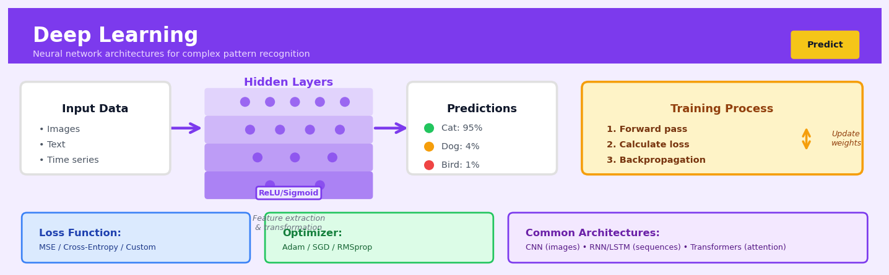

Deep Learning#


The most expensive mistake in deep learning is training a massive model on dirty data. Always invest time in data quality checks and exploratory analysis before spinning up those GPUs—a simple class imbalance or label noise issue can waste thousands of dollars in compute and weeks of iteration time that no amount of architectural complexity will fix.
The 60-Second Version#
What it does: Deep learning automatically finds patterns in complex data—like images, text, or voice—by mimicking how the human brain processes information through layers of artificial neurons.
When to use it: You have large amounts of unstructured data (images, documents, audio) or a problem so complex that traditional methods can’t capture the patterns, and you need predictions or classifications that adapt as new data arrives.
What you get back: Trained models that can recognize objects in photos, understand written text, predict customer behavior, or forecast demand—outputs you can embed directly into applications, dashboards, or automated decision workflows.
Difficulty |
Advanced |
Typical runtime |
Hours to days on millions of records (GPU-accelerated) |
What you bring |
Large labeled datasets; computational resources (GPUs preferred) |
What you get |
Prediction models, classifications, or generated content |
Heuristix bucket |
Predict — Machine Learning & Forecasting |
Deep learning requires substantially more data and computing power than traditional methods, but becomes the only viable option when human-engineered features simply cannot capture the complexity of your problem.
Learning Objectives#
After reading this chapter, a business user will be able to:
Identify business problems where deep learning outperforms traditional methods, such as image classification, natural language processing, and complex pattern recognition in unstructured data.
Interpret neural network predictions by examining confidence scores, activation patterns, and feature importance to explain model decisions to non-technical stakeholders.
Evaluate whether the computational cost, data requirements, and interpretability trade-offs of deep learning justify its use over simpler alternatives for a specific business case.
After reading this chapter, a data scientist will be able to:
Build and train multilayer neural networks using modern frameworks, selecting appropriate architectures (feedforward, convolutional, recurrent) based on data type and problem structure.
Optimize model performance by tuning hyperparameters such as learning rate, batch size, network depth, and regularization strength while balancing training time against accuracy gains.
Diagnose training failures including vanishing gradients, overfitting, and poor convergence by analyzing loss curves, gradient distributions, and validation metrics to apply targeted corrections.
Overview#
Deep learning is a class of machine learning algorithms that employs artificial neural networks with multiple layers (hence “deep”) to learn hierarchical representations of data. Its core purpose is to automatically discover the intricate structures and patterns in high-dimensional data—such as images, text, audio, and complex tabular datasets—without requiring manual feature engineering. Deep learning belongs to the family of representation learning methods and serves as the foundation for modern artificial intelligence applications including computer vision, natural language processing, speech recognition, and advanced predictive analytics.
When to Use This#
Use when working with unstructured data (images, text, audio): Deep learning excels at extracting meaningful features from raw pixels, word sequences, or waveforms where traditional feature engineering is impractical or insufficient.
Use when you have large datasets (typically >10,000 samples): Neural networks are data-hungry; their capacity to model complex relationships requires substantial training data to avoid overfitting and achieve generalisation.
Use when the relationship between inputs and outputs is highly nonlinear and complex: Deep networks can approximate arbitrarily complex functions, making them suitable when simpler models (linear regression, decision trees) plateau in performance.
Use when automatic feature learning is preferable to manual feature engineering: In domains where expert knowledge is limited or features are difficult to articulate, deep learning can discover relevant representations autonomously.
Use when state-of-the-art performance is required and computational resources are available: For many benchmark tasks, deep learning methods define the current best achievable accuracy.
Use when transfer learning can be leveraged: Pre-trained models on large datasets (ImageNet, BERT) can be fine-tuned for specific tasks with relatively small domain-specific data.
Do NOT use when interpretability is paramount: Deep neural networks are often criticised as “black boxes”; if regulatory or business requirements demand explainable decisions (e.g., credit scoring in regulated markets), consider simpler models or ensure robust interpretability layers.
Do NOT use when data is scarce: With fewer than a few thousand samples, classical machine learning methods with proper regularisation often outperform deep learning.
Do NOT use when computational budget is severely constrained: Training deep networks requires significant compute (GPUs/TPUs), electricity, and time—consider whether the marginal performance gain justifies the cost.
Do NOT use as a first approach on structured tabular data: Gradient boosting methods (XGBoost, LightGBM) frequently match or exceed deep learning performance on tabular data with far less tuning effort.
Questions This Answers#
Customer Understanding and Experience#
Can we automatically detect which customer service calls are escalating so we can intervene before they become complaints?
Which customers are most likely to churn in the next 90 days, and what specific actions would keep them?
What are customers actually saying about our new product launch across social media, reviews, and support tickets—and is sentiment improving or declining?
Can we predict which website visitors will convert to buyers within the next session based on their browsing behavior?
Are there distinct customer segments we’re missing that don’t fit our traditional demographic categories?
Operational Efficiency and Risk#
How can we reduce our fraud detection false positives by 40% while still catching actual fraudulent transactions?
Which equipment on our factory floor is likely to fail in the next 30 days so we can schedule preventive maintenance?
Can we forecast demand for our top 500 SKUs accurately enough to reduce inventory carrying costs by 15-20%?
What’s causing the quality defects in our manufacturing line—can we spot the patterns before products leave the facility?
Should we approve this loan application, and what’s the actual default risk compared to applicants with similar profiles?
Content and Product Intelligence#
Which product images and descriptions will drive the highest conversion rates before we launch the campaign?
Can we automatically tag and organize our 10 years of document archives so employees can actually find what they need?
What content should we recommend to each user to maximize engagement and time spent on our platform?
Is this medical scan showing early signs of disease that a human reviewer might miss?
How It Works#
Imagine teaching a child to recognize animals. You don’t hand them a rulebook that says “if it has whiskers and pointy ears, it’s probably a cat.” Instead, you show them dozens of pictures: “This is a cat. This is also a cat. This is a dog.” Over hundreds of examples, the child’s brain builds its own internal understanding—learning that cats have certain shapes, textures, and features, even though you never explicitly defined those rules. Deep learning works the same way: it learns patterns from examples rather than following instructions written by programmers. Just as the child eventually recognizes a cat they’ve never seen before, a deep learning system can identify patterns in entirely new data after training on thousands of examples.
INPUT LAYER → HIDDEN LAYERS → OUTPUT LAYER
Raw Image Feature Detection Prediction
(pixels) (learned patterns) (final answer)
┌───┐ ┌─────────────────┐ ┌──────────┐
│▓▓▓│ → │ Layer 1: │ → │ │
│▓░▓│ │ edges, curves │ │ Cat │
│▓▓▓│ ├─────────────────┤ │ (95%) │
└───┘ │ Layer 2: │ │ │
│ ears, whiskers │ │ Dog │
↓ ├─────────────────┤ │ (3%) │
│ Layer 3: │ │ │
Each pixel → │ cat face parts │ → │ Other │
adjusts └─────────────────┘ │ (2%) │
thousands └──────────┘
of internal Each layer builds on
connections the previous, learning
increasingly complex
patterns automatically
Step 1: Initialize the network structure. The system sets up multiple layers of interconnected nodes, like a multi-story factory where each floor processes information and passes it upward. Initially, all the connections between nodes have random strengths—the network knows nothing yet.
Step 2: Feed in training examples with known answers. You show the network thousands of labeled examples—images marked “cat” or “not cat,” emails marked “spam” or “legitimate,” or whatever you’re trying to teach it. Each example flows through all the layers from input to output.
Step 3: Make predictions and measure errors. The network processes each example and produces a guess. Early on, these guesses are terrible because the connections are random. The system measures how wrong each prediction is—this error score becomes crucial feedback.
Step 4: Adjust connection strengths backward through layers. Here’s where the magic happens: the network traces backward from the output through every layer, adjusting the strength of connections to reduce the error. If certain connections led to wrong answers, they get weakened. Connections that pushed toward correct answers get strengthened.
Step 5: Repeat thousands of times until patterns emerge. Through countless rounds of seeing examples, making predictions, measuring mistakes, and adjusting, the network gradually discovers which patterns matter. Early layers might learn to detect edges and colors. Middle layers recognize shapes and textures. Deep layers identify entire objects or concepts.
Step 6: Deploy the trained network on new data. Once trained, the network can process data it’s never seen before. All those adjusted connection strengths now form a sophisticated pattern-recognition machine that applies what it learned to novel situations.
The key insight: Deep learning discovers complex patterns by breaking them into hierarchies of simpler patterns across multiple layers, learning directly from examples rather than requiring humans to manually specify rules—making it powerful for problems too complex to program explicitly.
The Intuition#
Imagine you are teaching a child to recognise a cat in a photograph. You would not start by explaining edge detection algorithms or Fourier transforms of pixel intensities. Instead, the child learns by seeing thousands of cats, gradually building up an internal hierarchy of concepts: first, they notice basic shapes and textures; then they combine these into parts like ears, whiskers, and tails; finally, they assemble these parts into the holistic concept of “cat.” Deep learning mimics this hierarchical learning process. Each layer of a neural network learns to recognise increasingly abstract features, with early layers detecting simple patterns and deeper layers composing these into complex concepts.
Consider a different analogy: an assembly line in a factory. Raw materials enter at one end, and at each station, workers perform a specific transformation—cutting, shaping, polishing, assembling. The final product emerges at the end, vastly different from the raw inputs. In a neural network, data flows through successive layers, each applying a transformation. The “workers” are mathematical functions (weighted sums followed by nonlinear activations), and the assembly instructions (weights) are learned from data rather than programmed by hand. The key insight is that stacking many simple transformations enables the network to represent extraordinarily complex mappings from inputs to outputs.
Why does depth matter? A shallow network (one hidden layer) can theoretically approximate any function, but it may require an impractically large number of neurons. Depth provides efficiency: certain functions that require exponentially many neurons in a shallow network can be represented with polynomially many neurons in a deep network. Intuitively, depth allows the network to reuse computations—a feature detector learned in an early layer can be combined in multiple ways by later layers, enabling compositional generalisation. This is why deep learning has revolutionised fields like computer vision and natural language processing, where the underlying structure of the data is inherently hierarchical.
The Mathematics#
Problem Setup and Notation#
Let \(\mathcal{D} = \{(\mathbf{x}^{(i)}, y^{(i)})\}_{i=1}^{N}\) denote a training dataset of \(N\) input-output pairs, where \(\mathbf{x}^{(i)} \in \mathbb{R}^{d}\) is the \(d\)-dimensional input feature vector and \(y^{(i)}\) is the target (scalar for regression, class label for classification). We seek to learn a function \(f: \mathbb{R}^d \rightarrow \mathbb{R}^k\) parameterised by weights \(\boldsymbol{\theta}\) such that \(f(\mathbf{x}; \boldsymbol{\theta}) \approx y\) for unseen inputs.
A feedforward neural network with \(L\) layers computes:
where:
\(\mathbf{W}^{(l)} \in \mathbb{R}^{n_l \times n_{l-1}}\) is the weight matrix for layer \(l\)
\(\mathbf{b}^{(l)} \in \mathbb{R}^{n_l}\) is the bias vector
\(\sigma^{(l)}\) is the activation function for hidden layers
\(g\) is the output activation (identity for regression, softmax for classification)
\(\boldsymbol{\theta} = \{\mathbf{W}^{(l)}, \mathbf{b}^{(l)}\}_{l=1}^{L}\) collects all parameters
Activation Functions#
Activation functions introduce nonlinearity, enabling the network to learn complex mappings. Common choices include:
ReLU (Rectified Linear Unit):
Sigmoid:
Tanh:
Softmax (for multi-class output):
Loss Functions and Objective#
The objective is to minimise an empirical risk (loss) function over the training data:
where \(\ell\) is a per-sample loss and \(\Omega(\boldsymbol{\theta})\) is a regularisation term (e.g., \(L_2\) penalty \(\|\boldsymbol{\theta}\|_2^2\)).
Mean Squared Error (regression):
Cross-Entropy Loss (binary classification):
Categorical Cross-Entropy (multi-class):
Backpropagation#
Optimisation requires computing \(\nabla_{\boldsymbol{\theta}} \mathcal{L}\). Backpropagation efficiently computes these gradients via the chain rule. Define the error signal at layer \(l\):
For hidden layers, propagate backwards:
where \(\odot\) denotes element-wise multiplication and \(\sigma'\) is the derivative of the activation. The gradients with respect to parameters are:
Stochastic Gradient Descent and Variants#
Parameters are updated iteratively:
where \(\eta\) is the learning rate. In practice, we use mini-batch gradient descent, computing gradients over subsets of size \(B\). Advanced optimisers include momentum, RMSprop, and Adam.
Adam Update:
Assumptions#
Independent and identically distributed (i.i.d.) data: Training and test samples are drawn from the same distribution.
Sufficient capacity: The network architecture can represent the true underlying function.
Differentiability: Loss and activations are differentiable (or subdifferentiable for ReLU).
Adequate regularisation: Without regularisation, deep networks can memorise training data.
Edge Cases and Degenerate Conditions#
Vanishing gradients: In very deep networks with sigmoid/tanh activations, gradients can shrink exponentially, stalling learning. ReLU and residual connections mitigate this.
Exploding gradients: Gradients can grow unboundedly; gradient clipping is a standard remedy.
Dead neurons: ReLU units can become permanently inactive if they output zero for all inputs; Leaky ReLU addresses this.
Overfitting: With high capacity and limited data, the network fits noise; dropout, early stopping, and weight decay are countermeasures.
Relationship to Other Methods#
Linear regression is a single-layer network with identity activation.
Logistic regression is a single-layer network with sigmoid activation.
Kernel methods (SVMs) can be viewed as single hidden-layer networks with fixed feature mappings.
Gradient boosting and deep learning both learn complex functions but via different mechanisms (ensemble of weak learners vs. layered representations).
Understanding the Mathematics#
The Neuron Activation Function#
The equation: $\(z = w_1x_1 + w_2x_2 + \cdots + w_nx_n + b\)\( \)\(a = \sigma(z)\)$
Read it aloud: The first equation says: the weighted sum equals the first weight times the first input, plus the second weight times the second input, and so on for all inputs, plus a bias term. The second equation says: the activation equals a special function applied to that weighted sum.
What each symbol means:
\(z\) = the weighted sum (intermediate calculation)
\(w_1, w_2, \ldots, w_n\) = weights (importance multipliers for each input)
\(x_1, x_2, \ldots, x_n\) = input values (features)
\(b\) = bias (shifts the decision boundary)
\(a\) = activation (the neuron’s output)
\(\sigma\) = activation function (often sigmoid or ReLU)
A concrete numerical example: A bank is predicting loan default risk. Three inputs: credit score (\(x_1 = 720\)), debt-to-income ratio (\(x_2 = 0.35\)), and years employed (\(x_3 = 5\)). Weights are \(w_1 = 0.002\), \(w_2 = -3.0\), \(w_3 = 0.15\), and bias \(b = -1.0\).
Using sigmoid activation: \(a = \frac{1}{1 + e^{-0.14}} \approx 0.535\)
Why this equation matters: This weighted sum lets the network learn which features matter most—without it, every input would have equal importance and the model couldn’t distinguish signal from noise.
The Loss Function (Mean Squared Error)#
The equation: $\(L = \frac{1}{n}\sum_{i=1}^{n}(y_i - \hat{y}_i)^2\)$
Read it aloud: The loss equals one divided by the number of examples, multiplied by the sum of each true value minus its predicted value, squared.
What each symbol means:
\(L\) = loss (total prediction error)
\(n\) = number of training examples
\(y_i\) = actual outcome for example \(i\)
\(\hat{y}_i\) = predicted outcome for example \(i\)
\(\sum\) = sum across all examples
A concrete numerical example: A retailer predicts next week’s sales for four stores. Actual sales: [$12,000, $15,500, $9,800, $18,200]. Predictions: [$11,500, $16,000, $9,500, $17,800].
Errors: \((12000-11500)^2 = 250,000\); \((15500-16000)^2 = 250,000\); \((9800-9500)^2 = 90,000\); \((18200-17800)^2 = 160,000\)
Why this equation matters: Without measuring how wrong we are, we can’t improve—the loss function converts vague notions of “accuracy” into a single number the algorithm can minimize.
Backpropagation (Gradient Descent Update)#
The equation: $\(w_{\text{new}} = w_{\text{old}} - \alpha \frac{\partial L}{\partial w}\)$
Read it aloud: The new weight equals the old weight minus the learning rate multiplied by the partial derivative of the loss with respect to that weight.
What each symbol means:
\(w_{\text{new}}\) = updated weight value
\(w_{\text{old}}\) = current weight value
\(\alpha\) = learning rate (step size)
\(\frac{\partial L}{\partial w}\) = gradient (how much loss changes when weight changes)
A concrete numerical example: A weight is currently \(w = 0.5\). The gradient is \(\frac{\partial L}{\partial w} = 1.2\) (positive means increasing this weight increases error). Learning rate \(\alpha = 0.1\).
The weight decreased because it was pushing predictions in the wrong direction.
Why this equation matters: This is how neural networks learn—by nudging every weight slightly in the direction that reduces error, thousands of times, until predictions become accurate.
The Big Picture#
The mathematics of deep learning solves a deceptively simple problem: find millions of numbers (weights) that transform raw inputs into accurate predictions. The weighted sum captures how evidence combines, the activation function introduces non-linearity so networks can learn curves and complex patterns, and the loss function defines “good” in mathematical terms. Gradient descent then climbs down the error landscape one careful step at a time. This approach works because it’s differentiable—we can calculate exactly how each tiny weight change affects the final error—unlike decision rules or lookup tables. Ultimately, deep learning mathematics is just sophisticated trial-and-error: guess, measure how wrong you are, adjust everything slightly toward being less wrong, repeat two million times.
Understanding the Mathematics#
The Neuron Activation#
The equation:
Read it aloud:
“Z equals weight-one times input-one, plus weight-two times input-two, and so on for all inputs, plus a bias term.”
What each symbol means:
z = the weighted sum before activation (the “raw signal”)
x₁, x₂, …, xₙ = the input features (pixels, words, measurements)
w₁, w₂, …, wₙ = weights that determine how important each input is
b = bias, a constant that shifts the output up or down
n = the total number of inputs
A concrete numerical example:
A bank is predicting loan default risk. The neuron receives three inputs: credit score (720), debt-to-income ratio (0.35), and years employed (5). The learned weights are 0.002, -15, and 0.8, with a bias of -2.
z = (0.002 × 720) + (-15 × 0.35) + (0.8 × 5) + (-2)
z = 1.44 + (-5.25) + 4 + (-2)
z = -1.81
Why this equation matters:
This weighted sum lets the neuron decide which inputs actually matter for its decision—without it, the network couldn’t learn that credit score deserves more attention than employment length.
The Activation Function (ReLU)#
The equation:
Read it aloud:
“The activation equals whichever is larger: zero or z.”
What each symbol means:
f(z) = the neuron’s final output after activation
max = choose the maximum value from the options
z = the weighted sum we just calculated
0 = zero (the alternative option)
A concrete numerical example:
Using our loan default neuron where z = -1.81:
f(-1.81) = max(0, -1.81) = 0
If instead z had been 2.5:
f(2.5) = max(0, 2.5) = 2.5
Why this equation matters:
ReLU introduces nonlinearity—without it, stacking a hundred layers would be mathematically identical to having just one layer, making deep learning impossible.
The Loss Function (Mean Squared Error)#
The equation:
Read it aloud:
“The loss equals the average of all the squared differences between actual values and predicted values.”
What each symbol means:
L = total loss (the “wrongness” score we want to minimize)
m = number of training examples
yᵢ = actual true value for example i
ŷᵢ = network’s predicted value for example i
Σ = sum up all the examples
² = square the difference (makes all errors positive and penalizes big mistakes more)
A concrete numerical example:
An e-commerce site predicts delivery times for three orders. Actual times: 2 days, 5 days, 3 days. Predicted: 3 days, 4 days, 3 days.
L = [(2-3)² + (5-4)² + (3-3)²] / 3
L = [(-1)² + (1)² + (0)²] / 3
L = [1 + 1 + 0] / 3
L = 0.67 days²
Why this equation matters:
The loss function is the network’s report card—it converts “doing a good job” into a single number that the training algorithm can minimize through calculus.
The Gradient Descent Update Rule#
The equation:
Read it aloud:
“The new weight equals the old weight minus the learning rate times the derivative of loss with respect to that weight.”
What each symbol means:
w = a weight being updated
:= = “gets updated to” or “becomes”
α = learning rate (how big a step to take)
∂L/∂w = the gradient (which direction increases loss)
− = move in the opposite direction (downhill)
A concrete numerical example:
Current weight is 0.5, learning rate is 0.01, and the gradient is 12 (meaning increasing this weight increases loss).
w := 0.5 - (0.01 × 12)
w := 0.5 - 0.12
w := 0.38
The weight decreased because it was pushing loss upward.
Why this equation matters:
This is how networks learn—by repeatedly nudging thousands of weights downhill until predictions improve, like adjusting recipe ingredients based on taste tests.
The Big Picture#
The mathematics of deep learning is fundamentally trying to find the right “knobs” (weights) that transform messy inputs into accurate predictions through layers of nonlinear transformations. This particular approach—stacking differentiable functions and using gradient descent—was chosen because the chain rule of calculus lets us figure out exactly how much each weight contributed to the final error, even through dozens of layers. Deep learning mathematics boils down to this: build a complex function with millions of adjustable parameters, measure how wrong it is, then use calculus to systematically adjust every parameter in the direction that reduces wrongness.
Python Implementation#
"""
Deep Learning: Complete Implementation Example
Using Keras/TensorFlow for a multi-class classification problem
"""
import numpy as np
import pandas as pd
from sklearn.datasets import make_classification
from sklearn.model_selection import train_test_split
from sklearn.preprocessing import StandardScaler
from sklearn.metrics import classification_report, confusion_matrix
import tensorflow as tf
from tensorflow import keras
from tensorflow.keras import layers, regularizers
import matplotlib.pyplot as plt
# Set random seeds for reproducibility
np.random.seed(42)
tf.random.set_seed(42)
# -----------------------------------------------------------------------------
# Example 1: Feedforward Neural Network for Tabular Classification
# -----------------------------------------------------------------------------
# Generate synthetic dataset simulating customer churn prediction
# 10,000 samples, 20 features, 3 classes (low/medium/high risk)
X, y = make_classification(
n_samples=10000,
n_features=20,
n_informative=15,
n_redundant=3,
n_classes=3,
n_clusters_per_class=2,
random_state=42
)
# Split into train/validation/test sets
X_train, X_temp, y_train, y_temp = train_test_split(X, y, test_size=0.3, random_state=42)
X_val, X_test, y_val, y_test = train_test_split(X_temp, y_temp, test_size=0.5, random_state=42)
# Standardise features (critical for neural network convergence)
scaler = StandardScaler()
X_train_scaled = scaler.fit_transform(X_train)
X_val_scaled = scaler.transform(X_val)
X_test_scaled = scaler.transform(X_test)
# Build feedforward neural network
model = keras.Sequential([
# Input layer implicitly defined by input_shape
layers.Dense(128, activation='relu', input_shape=(20,),
kernel_regularizer=regularizers.l2(0.001)),
layers.BatchNormalization(), # Stabilises training
layers.Dropout(0.3), # Regularisation: randomly zero 30% of units
layers.Dense(64, activation='relu',
kernel_regularizer=regularizers.l2(0.001)),
layers.BatchNormalization(),
layers.Dropout(0.3),
layers.Dense(32, activation='relu',
kernel_regularizer=regularizers.l2(0.001)),
layers.Dropout(0.2),
# Output layer: 3 units with softmax for multi-class probability
layers.Dense(3, activation='softmax')
])
# Compile model with Adam optimiser and categorical cross-entropy loss
model.compile(
optimizer=keras.optimizers.Adam(learning_rate=0.001),
loss='sparse_categorical_crossentropy', # Use sparse for integer labels
metrics=['accuracy']
)
# Display model architecture
model.summary()
# Define callbacks for training
callbacks = [
# Stop training when validation loss stops improving
keras.callbacks.EarlyStopping(
monitor='val_loss',
patience=10,
restore_best_weights=True
),
# Reduce learning rate when validation loss plateaus
keras.callbacks.ReduceLROnPlateau(
monitor='val_loss',
factor=0.5,
patience=5,
min_lr=1e-6
)
]
# Train the model
history = model.fit(
X_train_scaled, y_train,
validation_data=(X_val_scaled
## Visualisations


## Using This in Heuristix
### What Data You'll Need
The Deep Learning node expects a cleaned, preprocessed dataset where each row represents one observation. You'll need:
- **Target column**: A single numeric (for regression) or categorical (for classification) variable you want to predict
- **Feature columns**: Numeric or categorical predictor variables—the node will automatically encode categoricals and normalize numerics internally
**Example input:**
| CustomerID | Age | Income | Region | Churned |
|------------|-----|--------|--------|---------|
| 1001 | 34 | 52000 | West | No |
| 1002 | 45 | 78000 | East | Yes |
The node will transform this internally and output predictions alongside your original data.
### Configuration Parameters
| Parameter | What It Controls | Sensible Default | When to Change |
|-----------|------------------|------------------|----------------|
| **Network Architecture** | Number and size of hidden layers | 2 layers, 64 nodes each | Use more layers (3-4) and nodes (128-256) for complex patterns; fewer (1 layer, 32 nodes) for simple datasets |
| **Activation Function** | How neurons transform inputs | ReLU | Try LeakyReLU if training seems stuck; use Tanh for data with negative values |
| **Learning Rate** | How fast the model updates weights | 0.001 | Decrease to 0.0001 if training is unstable; increase to 0.01 for faster initial learning on large datasets |
| **Batch Size** | Number of samples per training update | 32 | Increase to 64-128 for larger datasets (>100K rows) to speed up training; decrease to 16 for small datasets |
| **Epochs** | How many times to cycle through all data | 50 | Increase to 100-200 if validation accuracy is still improving; decrease to 20-30 for quick experiments |
| **Validation Split** | Percentage held out for validation | 20% | Increase to 30% for small datasets; decrease to 10% when data is abundant |
| **Early Stopping Patience** | Epochs to wait before stopping if no improvement | 10 | Increase to 15-20 for noisy data; decrease to 5 for faster iteration |
### What You'll Get Out
**Predictions Table**: Your original data plus a `Prediction` column and `Confidence` scores (for classification) or prediction intervals (for regression).
**Performance Metrics**:
- Classification: accuracy, precision, recall, F1-score, and confusion matrix
- Regression: RMSE, MAE, R-squared
**Visualization Panel**:
- Training history chart showing loss curves for both training and validation sets
- Feature importance rankings (based on permutation analysis)
- For classification: ROC curves and precision-recall curves
### Connecting Downstream
Connect the predictions output to:
- **Model Evaluation** node to compare against other algorithms
- **Filter** node to identify high-confidence vs. uncertain predictions
- **Visualization** node to create custom charts of predictions vs. actuals
- **Export** node to deploy predictions to your database or application
### Quick Start: Customer Churn Prediction
1. **Connect your data**: Drag your customer table (with historical churn labels) into the Deep Learning node
2. **Select target**: Choose "Churned" as your target variable
3. **Choose features**: Select relevant predictors (exclude IDs and timestamps)
4. **Start with defaults**: Click "Train Model" using the preset configuration
5. **Review training chart**: Watch the validation loss—if it plateaus quickly, you're done; if it's still decreasing at epoch 50, increase epochs to 100
6. **Check feature importance**: Identify your top 3-5 drivers to share with stakeholders
7. **Export predictions**: Connect to downstream nodes for deployment or further analysis
### Pro Tips from Experienced Users
**Normalize your data first**: Even though the node does internal normalization, extreme outliers can still cause problems. Run outlier detection upstream.
**Watch for overfitting**: If training accuracy is 95% but validation is 70%, you're overfitting. Reduce network size or add more data.
**Start simple, then expand**: Begin with a single hidden layer. Only add complexity if performance plateaus—deep learning isn't always better than simpler models for tabular data.
**Use early stopping religiously**: It saves time and prevents overfitting. The default patience of 10 epochs works well for most business datasets.
**Compare against baselines**: Always run a Random Forest or Gradient Boosting node alongside. Deep learning shines with images and text, but tree-based methods often win on structured business data.
## Config Recipes
### Recipe 1: Quick Exploration on CPU
- **When to use:** Initial prototyping with small-to-medium datasets (< 100K rows) when GPU isn't available or dataset size doesn't justify setup overhead.
- **Settings:**
| Parameter | Value | Why |
|-----------|-------|-----|
| `batch_size` | 128 | Balances memory usage with stable gradients on CPU |
| `epochs` | 10 | Enough to see if the model learns without waiting hours |
| `hidden_layers` | [64, 32] | Two small layers catch non-linearity without overfitting small data |
| `learning_rate` | 0.001 | Safe default that works for Adam optimizer |
| `optimizer` | Adam | Adaptive learning rates require less tuning than SGD |
| `early_stopping_patience` | 3 | Stops quickly if model plateaus, saving compute time |
- **What you get:** A working baseline in minutes that reveals whether deep learning is appropriate for your problem.
- **Trade-off:** Likely underfits complex patterns; not suitable for final deployment or large-scale data.
### Recipe 2: Production-Grade Classification
- **When to use:** Deploying a customer-facing model where accuracy and reliability matter more than training time.
- **Settings:**
| Parameter | Value | Why |
|-----------|-------|-----|
| `batch_size` | 32 | Smaller batches improve generalization through noisier gradients |
| `epochs` | 100 | Allows full convergence with early stopping as safety net |
| `hidden_layers` | [256, 128, 64] | Three-layer depth captures hierarchical features in real-world data |
| `learning_rate` | 0.0001 | Conservative rate prevents overshooting optimal weights |
| `optimizer` | Adam | Industry standard for stability |
| `dropout` | 0.3 | Regularization critical for production robustness |
| `early_stopping_patience` | 15 | Tolerates longer plateaus before stopping |
| `validation_split` | 0.2 | Dedicated holdout prevents overfitting to training data |
- **What you get:** A robust model with maximized accuracy and validated generalization performance.
- **Trade-off:** Training takes 10-50x longer than exploration settings; requires GPU for reasonable iteration speed.
### Recipe 3: Highly Imbalanced Data (e.g., Fraud Detection)
- **When to use:** Binary classification where positive class represents < 5% of samples and false negatives are costly.
- **Settings:**
| Parameter | Value | Why |
|-----------|-------|-----|
| `class_weight` | {0: 1, 1: 20} | Forces model to pay attention to rare positive class |
| `batch_size` | 64 | Ensures most batches contain at least one positive example |
| `loss_function` | focal_loss | Focuses learning on hard-to-classify minority examples |
| `hidden_layers` | [128, 128] | Wider layers needed to learn subtle fraud patterns |
| `learning_rate` | 0.0005 | Slower learning prevents majority class from dominating early |
| `metrics` | ['precision', 'recall', 'AUC'] | Accuracy is meaningless with imbalanced data |
- **What you get:** A model that actually detects rare events instead of predicting the majority class every time.
- **Trade-off:** Higher false positive rate; requires careful threshold tuning post-training.
### Recipe 4: Tabular Data with Missing Values
- **When to use:** Structured datasets with 20-40% missing entries where imputation methods lose signal (e.g., medical records, sensor data).
- **Settings:**
| Parameter | Value | Why |
|-----------|-------|-----|
| `embedding_dim` | 16 | Learns representations that naturally handle missingness |
| `hidden_layers` | [200, 100] | Larger first layer captures sparse information patterns |
| `batch_normalization` | True | Stabilizes training with inconsistent input distributions |
| `dropout` | 0.4 | Aggressive regularization mimics missing data during training |
| `learning_rate` | 0.001 | Standard rate works when embeddings handle data quality issues |
- **What you get:** Surprisingly competitive performance without manual imputation or feature engineering.
- **Trade-off:** Entity embeddings require categorical encoding of continuous variables, adding preprocessing complexity.
## Business Applications
**Financial Services**
A European retail bank processing 40,000 credit card applications monthly struggled with fraud losses exceeding €3.2M annually. Traditional rule-based systems flagged so many legitimate transactions that analysts spent 60% of their time on false positives. Deep learning models using recurrent neural networks (RNNs) analyze transaction sequences, merchant patterns, and behavioral anomalies in real-time, learning subtle fraud signatures that evolve faster than rules can be updated. The bank reduced fraud losses by 47% while cutting false positive alerts by 62%, allowing the team to focus on genuinely suspicious activity.
**Retail & E-commerce**
An online fashion retailer with 1.8M SKUs faced a persistent problem: 35% of returns cited "item looks different than expected" as the reason, costing $4.7M annually in reverse logistics and lost margin. The company deployed convolutional neural networks (CNNs) to generate hyper-realistic product images from multiple angles and lighting conditions, combined with generative adversarial networks (GANs) to show how garments drape on different body types. Return rates for items with AI-enhanced imagery dropped from 35% to 19%, saving approximately $2.1M in the first year while improving customer satisfaction scores by 23 points.
**Healthcare**
A regional hospital network operating 12 emergency departments needed to prioritize chest X-rays for radiologist review, but junior clinicians often misjudged urgency, leading to dangerous delays. Deep learning models trained on 250,000 labeled chest radiographs detect pneumonia, pneumothorax, and pulmonary edema with 94% sensitivity, automatically flagging critical cases for immediate review. Time-to-diagnosis for life-threatening conditions fell from an average of 4.2 hours to 47 minutes, directly contributing to an estimated 18% reduction in severe complications from delayed treatment.
**Insurance**
A commercial property insurer processing 8,000 claims monthly after natural disasters sent adjusters to physically inspect every damaged building—a process taking 12–15 days per claim and costing $850 per site visit. The company now uses deep learning computer vision models to analyze drone footage and policyholder-submitted photos, automatically assessing structural damage severity, estimating repair costs, and detecting potential fraud indicators. Claims processing time dropped from 14 days to 36 hours for straightforward cases, reducing adjuster deployment costs by $1.3M annually while improving customer satisfaction during stressful post-disaster periods.
**Manufacturing**
A semiconductor fabrication plant producing 45,000 wafers monthly faced yield losses of 8% due to microscopic defects invisible to human inspectors until products failed downstream testing. Deep CNNs trained on high-resolution wafer imagery detect nanometer-scale anomalies in real-time during production, identifying defect patterns across 23 different failure modes. Defect detection accuracy improved from 73% to 96%, reducing scrap costs by $2.8M annually and cutting the time between defect occurrence and process correction from 18 hours to 12 minutes.
**Logistics & Supply Chain**
A national parcel delivery company handling 2.3M packages daily struggled with delivery time predictions—customers received 4-hour windows that were wrong 41% of the time, generating complaint calls costing $6 per incident. Deep learning models incorporating recurrent and attention-based architectures analyze traffic patterns, weather data, historical driver performance, package characteristics, and real-time vehicle telemetry to predict delivery times. Prediction accuracy improved to 89%, call center volume dropped by 340,000 calls annually, and the company saved $2.04M while measurably improving brand perception.
**Marketing & Media**
A digital publishing platform with 12M monthly visitors saw only 1.4% click-through rates on content recommendations, leaving significant engagement and ad revenue on the table. Deep learning recommendation engines using transformer architectures analyze reading history, session behavior, semantic content relationships, and real-time context to personalize article suggestions for each visitor. Click-through rates jumped from 1.4% to 3.8%, session duration increased by 67%, and programmatic ad revenue grew by $890K annually—all without adding inventory.
**Telecommunications**
A mobile network operator with 8.5M subscribers lost approximately 180,000 customers annually to competitors, with each churned customer representing $340 in lifetime value loss. Deep learning models analyzing call patterns, network usage, customer service interactions, billing history, and device upgrade cycles predict churn probability 60–90 days in advance with 83% accuracy. Targeted retention campaigns reduced churn by 23%, retaining approximately 41,400 customers and preserving $14M in annual revenue.
## Worked Example
Sarah Chen, a senior data scientist at Apex Telecom, was halfway through her morning coffee when the VP of Customer Experience walked into her office unannounced. "We're hemorrhaging high-value customers," he said, dropping a printout on her desk. "Twelve percent churn last quarter among accounts over $200 per month. We need to know who's at risk before they leave—not after."
The business case was clear: each lost high-value customer represented roughly $8,000 in lifetime value. If Sarah could identify at-risk customers two months in advance, the retention team could intervene with targeted offers. The company was willing to spend up to $500 per customer on retention—if the predictions were accurate enough to justify it.
Sarah spent the next two days assembling data from six different systems: billing records, customer service interactions, network usage logs, device information, plan changes, and payment history. The final dataset had 847 features and 94,000 customer records. Here's what a snapshot looked like:
| customer_id | monthly_charges | contract_months | support_calls_90d | data_usage_gb | churned |
|-------------|-----------------|-----------------|-------------------|---------------|---------|
| C_10234 | 218.50 | 18 | 3 | 42.3 | 0 |
| C_10891 | 187.20 | 6 | 0 | 15.8 | 0 |
| C_11445 | 242.10 | 24 | 7 | 8.2 | 1 |
| C_12003 | 195.75 | 3 | 2 | 31.7 | 1 |
The data was messy—she found 14 different formats for the same customer service category, billing records with negative values from credits, and three months where network usage logs had mysteriously zeroed out for an entire region. She spent hours cleaning, imputing, and standardizing before she was ready to model.
Sarah decided on a deep neural network rather than a simpler model like logistic regression for a specific reason: preliminary exploration showed complex interaction effects. Customers with high support calls *and* low data usage churned at different rates than those with high support calls *and* high data usage. Traditional models would require manually engineering hundreds of interaction terms. Deep learning could discover these patterns automatically.
She configured a four-layer network: an input layer matching her 847 features, two hidden layers with 256 and 128 neurons respectively (using ReLU activation to capture non-linearities), and a final output layer with sigmoid activation for binary classification. She used dropout regularization at 30% to prevent overfitting and set the learning rate to 0.001 with Adam optimization. The training ran for 50 epochs with early stopping if validation performance plateaued.
```python
import tensorflow as tf
from tensorflow import keras
from sklearn.model_selection import train_test_split
from sklearn.preprocessing import StandardScaler
# Sarah's preprocessing
X_train, X_test, y_train, y_test = train_test_split(
features, labels, test_size=0.2, stratify=labels, random_state=42
)
scaler = StandardScaler()
X_train_scaled = scaler.fit_transform(X_train)
X_test_scaled = scaler.transform(X_test)
# Build the network - deep enough to capture interactions
model = keras.Sequential([
keras.layers.Dense(256, activation='relu', input_shape=(847,)),
keras.layers.Dropout(0.3),
keras.layers.Dense(128, activation='relu'),
keras.layers.Dropout(0.3),
keras.layers.Dense(1, activation='sigmoid')
])
model.compile(
optimizer=keras.optimizers.Adam(learning_rate=0.001),
loss='binary_crossentropy',
metrics=['accuracy', keras.metrics.AUC(name='auc')]
)
# Train with early stopping
early_stop = keras.callbacks.EarlyStopping(monitor='val_auc', patience=5)
history = model.fit(X_train_scaled, y_train, epochs=50,
validation_split=0.2, callbacks=[early_stop])
After four hours of training, the results appeared:
Metric |
Training Set |
Test Set |
|---|---|---|
Accuracy |
89.2% |
87.4% |
AUC-ROC |
0.94 |
0.91 |
Precision (top 10%) |
— |
73.1% |
Recall (top 10%) |
— |
68.5% |
The AUC of 0.91 meant the model could reliably distinguish churners from non-churners. More importantly, when Sarah scored all current customers and examined the top 10% highest-risk accounts, 73% actually did churn in the following two months—far better than the baseline churn rate of 12%.
The insight came when Sarah used SHAP values to interpret the model. The network had discovered that customers who decreased data usage by more than 40% while simultaneously increasing support calls were 8× more likely to churn—a pattern no one had explicitly looked for. It suggested customers were trying to downgrade or troubleshoot issues before leaving entirely.
Two weeks later, Sarah presented to the executive team. They approved a pilot program targeting the top 2,000 highest-risk customers with personalized retention offers. Over the next quarter, the intervention reduced churn in that segment from 47% to 19%—saving an estimated $4.2 million in customer lifetime value.
If Sarah could do it over, she’d spend more time on feature engineering upfront. The model worked, but it was a black box that made the marketing team uncomfortable. She’d also push for streaming predictions—the batch scoring process meant some customers were identified too late. But for a first pass at a complex business problem, deep learning had proven its worth.
Interpreting Your Results#
You’ve just trained your first deep learning model, and now you’re staring at a screen full of metrics, loss curves, and performance statistics. Let’s make sense of what you’re actually looking at.
Training and Validation Loss Curves#
What am I looking at? These line charts show how your model’s error (loss) changed over each training iteration (epoch). You’ll see two lines: training loss shows how well the model fits your training data, while validation loss shows how well it performs on data it hasn’t seen.
What’s good? Both lines should trend downward and eventually flatten out. Ideally, they stay close together. Training loss around 0.1–0.3 for regression problems or 0.3–0.7 for classification typically indicates decent learning. For validation loss, you want it within 10–20% of your training loss.
Red flags:
Validation loss increases while training loss decreases (the classic “diverging lines”): You’re overfitting. The model is memorizing training data rather than learning patterns.
Both losses stuck at high values (not decreasing after 20+ epochs): Your model isn’t learning. Check your learning rate, data normalization, or model architecture.
Erratic, bouncing validation loss: Your learning rate is too high, or you have too few validation samples (less than 1,000 rows makes validation noisy).
Loss values showing “NaN” or infinity: Your model has exploded. Usually means learning rate is way too high (try reducing it by 10x).
Performance Metrics#
For Classification Tasks:
Accuracy tells you what percentage of predictions were correct. Below 60% means you’re barely better than guessing. 60–75% is acceptable for complex, multi-class problems. 75–90% is good. Above 90% is excellent—or possibly a red flag that you’re leaking target information from your features.
Precision and Recall matter more when classes are imbalanced. Precision below 0.4 means most of your “positive” predictions are wrong. Recall below 0.4 means you’re missing most actual positives. For business-critical use cases (fraud detection, medical diagnosis), you typically need both above 0.7.
AUC-ROC ranges from 0.5 (random guessing) to 1.0 (perfect). Below 0.65 means your model has weak discriminative power. 0.65–0.80 is acceptable. 0.80–0.90 is good. Above 0.90 is excellent—verify you don’t have data leakage.
For Regression Tasks:
RMSE (Root Mean Squared Error) needs context—it’s in the same units as your target variable. If predicting house prices in thousands, RMSE of 50 means you’re off by $50K on average. Compare RMSE to your target’s standard deviation: RMSE > 0.8× standard deviation means weak predictions. RMSE < 0.3× standard deviation is strong.
R² (coefficient of determination) shows what proportion of variance you’re explaining. Below 0.3 is poor. 0.3–0.6 is acceptable. 0.6–0.8 is good. Above 0.8 is excellent.
Reading Multiple Outputs Together#
High training accuracy (95%) + low validation accuracy (65%): Classic overfitting. Add dropout, reduce model complexity, or get more training data.
Both accuracies similar but low (both ~60%): Underfitting. Your model is too simple, or you need better features. Try a deeper network or more neurons per layer.
High AUC (0.85) + low precision (0.45): Your model can rank predictions well but the threshold needs tuning. Adjust your classification threshold based on business costs.
Sanity Check Checklist#
Is validation loss within 30% of training loss? If not, you’re likely overfitting.
Did you use at least 15–20% of your data for validation? Too small a validation set gives unreliable metrics.
Are your metrics better than a naive baseline? For classification, beat majority class guessing. For regression, beat the mean prediction.
Is your validation set from the same time period/source as training? If validating on future data when trained on past data, expect metrics to be worse in production.
Do loss curves show the model actually learned something? Both should decrease from their starting values by at least 30–50%.
Good Enough to Act On?#
You’re ready to deploy or make decisions when: (1) validation metrics meet your business requirements, (2) validation loss has been stable for 10+ epochs, and (3) you’ve validated the model on a truly held-out test set with metrics within 5–10% of validation performance. For most business applications, 75%+ accuracy or 0.75+ AUC with stable validation metrics means you have an actionable model.
Decision Guidance#
What This Result Is Telling You#
When a deep learning model produces predictions—whether identifying defective products, forecasting customer churn, or detecting fraudulent transactions—it’s telling you which specific instances deserve your attention and resources right now. Unlike traditional analytics that might say “20% of customers are at risk,” deep learning provides individual-level predictions: “Customer #47392 has an 87% probability of churning in the next 30 days.” This precision allows you to move from broad population insights to targeted, personalized interventions.
The confidence scores accompanying these predictions represent the model’s certainty based on patterns it has learned from thousands or millions of historical examples. A prediction with 95% confidence means that when the model has seen similar patterns in the past, it was correct 95 times out of 100. However, this is not a guarantee—it’s a probability that helps you prioritize where to invest limited resources like sales team time, quality inspection effort, or marketing budget.
Deep learning excels at finding subtle, complex patterns that humans and simpler models miss, but this sophistication comes with a responsibility to validate results against business reality. The model doesn’t understand your business context—it only knows the patterns in your data. A prediction that a customer will purchase doesn’t account for the fact that you’re discontinuing that product line next month, or that a new competitor just entered the market. You must layer business judgment onto the model’s statistical outputs to make sound decisions.
Decision Points#
If you see this… |
It means… |
Recommended action |
Who acts on this |
|---|---|---|---|
Prediction confidence ≥85% across the top 20% of cases |
The model has identified clear, strong patterns in your highest-priority segment |
Automate decisions for this segment or allocate premium resources (e.g., senior sales reps, expedited processing) |
Operations manager, automation team |
Prediction confidence between 60-84% for 40-60% of cases |
Moderate certainty; patterns exist but with more variability |
Use predictions to prioritize manual review order or create watchlists; don’t fully automate |
Front-line managers, quality assurance teams |
Prediction confidence <60% for more than 30% of cases |
Model uncertainty is high; insufficient historical patterns or data quality issues |
Investigate data coverage and quality; consider human judgment primary with model as secondary input |
Data science team, subject matter experts |
Sudden drop in prediction confidence (>15 percentage points) on new data |
Business environment has shifted; model’s learned patterns may no longer apply |
Pause automated decisions; compare recent outcomes to predictions; retrain model with recent data |
Analytics lead, business owner |
Consistent patterns in misclassified cases (e.g., all from one region or product line) |
Systematic gap in training data or business rules not captured in historical patterns |
Add targeted data collection; create manual override rules for identified segments |
Data engineering, domain experts |
When to Proceed vs. Investigate Further#
Proceed with confidence when:
Validation accuracy on recent data (last 30-60 days) remains within 5% of training accuracy
At least 70% of predictions have confidence scores above 75%
Business outcomes from initial pilot deployment match predicted results within acceptable margins (±10%)
Subject matter experts reviewing a sample (50-100 cases) agree with predictions in >80% of cases
Proceed with caution when:
Validation accuracy is 5-15% below training accuracy (indicates possible overfitting)
40-70% of predictions have moderate confidence (60-75% range)
The model performs well on aggregate metrics but shows inconsistent performance across important business segments
You’re applying the model to scenarios slightly outside its original training scope
Investigate before acting when:
Validation accuracy drops more than 15% from training performance
More than 30% of predictions have confidence below 60%
Prediction distributions shift dramatically (e.g., suddenly predicting 40% fraud rate when historical baseline is 2%)
Stakeholders identify multiple plausible cases where predictions contradict domain expertise
Do not use these results yet when:
You cannot explain in business terms what patterns the model uses for decisions (especially in regulated industries)
Testing on held-out data hasn’t been completed or documented
The model hasn’t been validated against known edge cases or adversarial scenarios
There’s no process in place to monitor ongoing prediction quality and trigger retraining
The Cost of Getting This Wrong#
Misinterpreting deep learning results typically manifests in one of two expensive ways: over-trusting automated predictions or dismissing valuable insights. A manufacturing company that automated quality control based on a poorly validated model discovered six months later that an entire product line had systematic defects the model consistently missed—resulting in a \(3M recall and lasting brand damage. The model had been trained primarily on older production equipment and failed to recognize defect patterns from newer machinery. Conversely, a retail bank that ignored a fraud detection model's predictions because "the scores seemed too high" lost \)800K to a coordinated fraud ring that the model had correctly identified in its early stages. The security team assumed the model was oversensitive because it flagged 15% of transactions in one region, not realizing a genuine fraud pattern was emerging. Both failures stemmed from treating the model as either infallible or useless, rather than as a powerful tool requiring ongoing validation, business context, and human judgment. The real cost isn’t just the immediate financial loss—it’s the organizational trust that evaporates when leaders feel burned by “AI that didn’t work,” making them resistant to future data-driven initiatives that could generate significant value.
Common Pitfalls#
The Overconfident First Epoch
Here’s what happened: A junior data scientist was building an image classifier for manufacturing defect detection. After training for just one epoch on 50,000 images, she saw the training accuracy jump to 94% and immediately shared the model with stakeholders, claiming near-human performance. The production deployment failed spectacularly—the model flagged nearly every good product as defective. She had concluded success from training metrics without ever checking validation performance.
Why it happens: The dopamine hit of seeing high accuracy numbers early in training creates confirmation bias. New practitioners mistake memorization for learning, especially when working with large, high-dimensional datasets where overfitting happens silently.
How to detect it: Check if training accuracy significantly exceeds validation accuracy (gap >5-10%). Look at your confusion matrix on held-out data—if precision and recall are wildly imbalanced or the model predicts mostly one class, you’ve memorized noise.
The fix: Always split data before touching it, monitor both training and validation metrics simultaneously, and never trust a model that hasn’t seen multiple epochs with early stopping criteria.
The Vanishing Gradient Graveyard
Here’s what happened: An experienced ML engineer designed a 30-layer neural network for time-series forecasting of energy demand. The model trained for hours, loss decreased steadily for the first few epochs, then flatlined at a mediocre value. He added more layers thinking deeper was better. Performance got worse. He concluded deep learning “doesn’t work” for this problem and switched to gradient boosting.
Why it happens: Practitioners assume more layers automatically equal better performance without understanding gradient flow. In very deep networks without proper architecture choices, gradients shrink to near-zero as they backpropagate through layers, leaving early layers essentially untrained.
How to detect it: During training, inspect gradient norms per layer using your framework’s built-in tools. If gradients in early layers are orders of magnitude smaller than later layers (e.g., 1e-8 vs 1e-2), you have vanishing gradients. Loss plateaus early despite the model having high capacity.
The fix: Use residual connections (ResNets), batch normalization, or switch to architectures designed for depth like transformers. Sometimes a shallower, well-regularized network outperforms a poorly-designed deep one.
The Batch Size Blindspot
Here’s what happened: A data scientist was training a sentiment analysis model on customer reviews. To speed up training, she maxed out GPU memory by setting batch_size=2048. The model converged in record time with excellent loss curves. When deployed, it performed worse than the baseline logistic regression. She concluded her architecture was flawed and started over.
Why it happens: Large batches train faster but provide less noisy gradient estimates, which can lead to converging to sharp minima that don’t generalize. It’s the classic speed-versus-quality tradeoff that isn’t obvious from loss curves alone.
How to detect it: Compare training time and final validation performance across different batch sizes. If batch_size=32 takes longer but achieves 2-3% better validation accuracy than batch_size=1024, you’ve found the problem. Test-time performance notably worse than validation suggests poor generalization.
The fix: Use learning rate scaling rules (multiply LR by batch size ratio) or stick to conventional batch sizes (32-256 for most problems). Fast training means nothing if the model fails in production.
The Learning Rate Catastrophe
Here’s what happened: A business analyst with some Python experience tried fine-tuning a pre-trained BERT model for document classification. She kept all default settings from a tutorial, including learning_rate=0.1. The first epoch showed loss = NaN. She assumed the data was corrupted and spent two days cleaning already-clean text data.
Why it happens: High learning rates cause weight updates so large they overshoot optimal values completely, leading to numerical instability. Tutorials often omit crucial hyperparameter context, and beginners don’t know which defaults are sacred.
How to detect it: Loss becomes NaN or inf within the first few batches. Alternatively, loss oscillates wildly rather than decreasing, or spikes suddenly after initially decreasing. Model predictions are all identical regardless of input.
The fix: Start with learning rates between 1e-5 and 1e-3 for fine-tuning pre-trained models, 1e-4 to 1e-2 for training from scratch. Use learning rate schedulers and run a learning rate range test to find the optimal value systematically.
The Validation Leak
Here’s what happened: A senior data scientist built a fraud detection model with impressive 98% validation accuracy. She had carefully normalized all features using StandardScaler on the entire dataset before splitting train/test. In production, precision dropped to 67%. She concluded the production data had drifted significantly.
Why it happens: Pre-processing the full dataset before splitting means validation data statistics influenced the training data transformation, creating optimistic performance estimates. It’s an insidious error because everything looks methodologically sound.
How to detect it: Validation metrics are suspiciously high compared to simple baselines. Production performance consistently underperforms validation by >5%. Re-run the pipeline fitting transformations only on training data—if metrics drop significantly, you’ve leaked information.
The fix: Fit all transformations, scalers, and encoders exclusively on training data, then apply those fitted transformations to validation and test sets. Use pipelines that enforce this ordering automatically.
Common Misconceptions#
“Deep learning works because it mimics how the human brain works”
Why people believe this: The terminology is seductive—neurons, layers, activation, learning. The biological metaphor is baked into every explanation, and it provides an intuitive mental model. When visualizations show networks “lighting up” in response to inputs, the parallel to neuroscience feels obvious and profound.
The truth: Modern deep learning bears almost no resemblance to biological neural systems. Real neurons communicate through complex electrochemical processes, temporal dynamics, and intricate feedback loops that artificial neural networks don’t capture. What we call “neurons” are just mathematical functions—typically weighted sums followed by nonlinear transformations. The backpropagation algorithm that trains these networks has no known biological equivalent. Deep learning works not because it replicates the brain, but because it implements hierarchical function composition with enough parameters to approximate complex mappings, optimized through gradient descent. The success comes from mathematical properties—universal approximation, differentiability, and high-dimensional optimization—not biological plausibility.
The real-world consequence: Teams waste resources pursuing “brain-like” architectures or justifying model decisions to executives with neuroscience analogies. More critically, this misconception leads practitioners to dismiss techniques that seem “unbiological” (like batch normalization or residual connections) when these are precisely the engineering innovations that make deep learning actually work at scale.
“More data always beats a better algorithm”
Why people believe this: This stems from influential early 2000s research and Google’s success with massive datasets. The aphorism became gospel in data science, reinforced by impressive results from companies with effectively unlimited data budgets. It feels empirically validated.
The truth: The relationship between data quantity and model performance follows a power law with diminishing returns, and the exponent depends critically on data quality, model architecture, and problem structure. Beyond a certain threshold—often reached sooner than expected—additional data yields minimal improvements without corresponding increases in model capacity or sophistication. More importantly, ten thousand carefully curated, representative examples often outperform a million noisy, biased ones. The real leverage comes from data efficiency: architectures with appropriate inductive biases (like convolutions for images or attention for sequences) can achieve strong performance with orders of magnitude less data than naive approaches.
The real-world consequence: Organizations pour budgets into data acquisition and labeling when their actual bottleneck is data quality, class imbalance, or architectural misalignment. A financial services company spent eighteen months collecting five years of transaction data to improve fraud detection, when six months of carefully stratified, oversampled data with a better loss function would have outperformed their final model—delivered three times faster.
“If the validation loss is decreasing, the model is learning something useful”
Why people believe this: Decreasing loss is the primary feedback signal during training. It’s what we optimize, what we monitor in TensorBoard, and what determines when to stop training. The entire training process is oriented around this metric.
The truth: Validation loss measures how well your model fits your validation set according to a specific mathematical objective—nothing more. It doesn’t measure whether the model has learned robust features, whether it will generalize to deployment conditions, or whether it solves the actual business problem. A model can achieve excellent validation loss by exploiting spurious correlations, dataset artifacts, or annotation biases that won’t exist in production. The loss function is a proxy, and all proxies can be gamed.
The real-world consequence: A medical imaging team deployed a model with impressive validation metrics that failed catastrophically in clinical use. Post-hoc analysis revealed it had learned to detect the specific imaging equipment used in the training hospitals rather than the pathology itself—a pattern perfectly predictive in validation but useless in the real world.
How This Connects#
Before This Node#
Feature Engineering prepares raw variables into model-ready inputs by creating derived features, scaling numerical values, and encoding categorical variables—critical because deep learning models require normalized numerical inputs and can waste training time learning basic transformations that should be pre-computed. Bad upstream data looks like raw text strings in numerical columns, missing value indicators coded as -999, or wildly different scales (age 0-100 vs. income 0-1,000,000), causing gradient explosion, poor convergence, or the model focusing on magnitude rather than patterns.
Data Cleaning removes duplicates, handles missing values, and corrects errors to ensure training data integrity—essential because neural networks will memorize garbage patterns in dirty data, producing models that fail catastrophically on real-world inputs. Bad upstream data looks like duplicate records inflating certain patterns, systematic missingness creating phantom correlations, or copy-paste errors that create impossible value combinations, leading to models that predict confidently but incorrectly on production data.
Train-Test Split partitions data into separate training and validation sets to enable honest performance evaluation—vital because deep learning’s high capacity means it will overfit spectacularly if validated on training data, giving false confidence in a model that fails immediately in deployment. Bad upstream splitting looks like temporal data shuffled randomly (leaking future into past), related records split across sets (customer transactions in both), or test sets too small to detect real performance, producing accuracy metrics 20-40 points higher than actual production performance.
Exploratory Data Analysis reveals class imbalances, outlier distributions, and variable relationships that inform architecture choices—important because neural networks are sensitive to imbalanced classes (predicting only the majority), extreme outliers (destabilizing gradients), and irrelevant features (adding noise). Bad upstream analysis means missing that 95% of samples are one class, or that three features are perfect multicollinear copies, resulting in models that appear to train well but predict only the dominant class or waste capacity on redundant information.
Dimensionality Reduction compresses high-dimensional inputs while preserving meaningful variation—useful when feature count exceeds sample count or computational budgets are constrained, allowing faster training and reducing overfitting risk. Bad upstream reduction means selecting dimensions that preserve variance but discard predictive signal, or applying PCA to mixed categorical-numerical data without proper encoding, creating compressed features that are mathematically valid but meaningless for prediction.
After This Node#
Model Evaluation computes performance metrics (accuracy, AUC, F1) on held-out test data to quantify prediction quality—perfectly suited to deep learning outputs because neural networks produce calibrated probability scores or continuous predictions that feed directly into standard classification and regression metrics.
Prediction Serving deploys the trained model to score new data in real-time or batch modes—well-matched to deep learning because modern frameworks export models as optimized artifacts (ONNX, TensorFlow Serving) that handle the complex tensor operations and GPU acceleration automatically.
Explainability Analysis generates feature importance scores, SHAP values, or attention weights to interpret what drives predictions—valuable for deep learning outputs because the model’s internal representations and activation patterns can be probed to reveal which input features or learned concepts most influenced specific predictions.
Ensemble Stacking combines deep learning predictions with outputs from other model types (gradient boosting, linear models) to improve overall accuracy—ideal because neural networks capture different patterns than tree-based methods, and their probability outputs blend naturally into meta-learner inputs.
Threshold Optimization tunes decision boundaries on predicted probabilities to balance precision-recall tradeoffs for business constraints—highly compatible with deep learning because neural networks output well-calibrated probabilities rather than hard classifications, giving rich signal for optimizing operational metrics.
Common Pipeline Patterns#
Image Classification Production Pipeline
Data Augmentation → Normalization → Deep Learning (CNN) → Prediction Serving → A/B Testing
Automatically categorizes product photos, user uploads, or document scans at scale, achieving 90%+ accuracy for visual recognition tasks that previously required manual human review.
Customer Churn Prediction System
Feature Engineering → Class Balancing → Deep Learning (Feedforward) → Threshold Optimization → Campaign Targeting
Identifies at-risk customers 30-60 days before predicted churn, enabling retention teams to intervene with targeted offers and reducing customer loss by 15-25%.
Natural Language Understanding Workflow
Text Preprocessing → Tokenization → Deep Learning (Transformer) → Ensemble Stacking → Explainability Analysis
Extracts sentiment, intent, and entities from customer messages or reviews, powering automated routing, sentiment dashboards, and insight reports with 85%+ F1 scores on complex text understanding tasks.
What to Have Ready#
Normalized, encoded feature matrix where all inputs are numerical (one-hot encoded categoricals, scaled continuous variables), missing values imputed or masked, and data types consistent—“ready” means df.dtypes shows only float32/int32, no nulls remain, and values fall within expected ranges (typically -3 to +3 for standardized features).
Sufficient training samples with at least 10× as many examples as you have input features for simple networks, or 1,000+ samples per class for complex architectures—“ready” means you’ve verified class balance (smallest class >5% of data or upsampled), checked for duplicate rows, and confirmed your dataset size supports the model complexity you’re planning.
Defined performance baseline from a simple model (logistic regression, random forest) establishing the minimum acceptable accuracy—“ready” means you’ve recorded baseline metrics in your experiment tracker and confirmed that your problem is actually learnable (baseline significantly beats random guessing).
Computational infrastructure with GPU access for training (local NVIDIA card, Colab, cloud instance) and framework installation verified—“ready” means you’ve run a toy model successfully, confirmed CUDA/GPU detection, and estimated training time fits your project timeline (minutes to hours, not days).
Try It Yourself#
Recommended Dataset#
Dataset: sklearn.datasets.load_digits()
Source: Built into scikit-learn, no download required
Why it’s ideal for Deep Learning: The digits dataset contains 8×8 grayscale images of handwritten digits (0-9), flattened into 64-pixel feature vectors. This image classification task is perfect for demonstrating deep learning because: (1) the spatial patterns in pixel intensities require hierarchical feature learning that neural networks excel at, (2) the multi-class nature (10 digits) showcases softmax classification, and (3) it’s complex enough to benefit from multiple layers yet small enough to train in seconds without GPU acceleration.
Business question: Can we build an automated digit recognition system for processing handwritten forms, checks, or postal codes—similar to systems banks and postal services use for document digitization?
Size: 1,797 images × 64 features (pixels), with 10 target classes
Starter Code#
import numpy as np
import matplotlib.pyplot as plt
from sklearn.datasets import load_digits
from sklearn.model_selection import train_test_split
from sklearn.neural_network import MLPClassifier
from sklearn.metrics import accuracy_score, classification_report, confusion_matrix
# Load the handwritten digits dataset
digits = load_digits()
X, y = digits.data, digits.target # 64 features per image, 10 digit classes
# Split into training (70%) and test (30%) sets
X_train, X_test, y_train, y_test = train_test_split(
X, y, test_size=0.3, random_state=42, stratify=y
)
# Normalize pixel values to 0-1 range (improves neural network training)
X_train_scaled = X_train / 16.0 # Pixels range from 0-16
X_test_scaled = X_test / 16.0
# Create a deep neural network with 3 hidden layers
# Architecture: 64 inputs → 100 → 50 → 25 → 10 outputs
model = MLPClassifier(
hidden_layer_sizes=(100, 50, 25), # Three hidden layers
activation='relu', # ReLU activation for non-linearity
solver='adam', # Adam optimizer for efficient training
max_iter=500, # Maximum training iterations
random_state=42
)
# Train the deep learning model
print("Training deep neural network...")
model.fit(X_train_scaled, y_train)
# Make predictions on test set
y_pred = model.predict(X_test_scaled)
# Output 1: Overall accuracy
accuracy = accuracy_score(y_test, y_pred)
print(f"\n1. Test Set Accuracy: {accuracy:.1%}")
# Output 2: Network architecture summary
print(f"\n2. Network Architecture:")
print(f" Layers: Input(64) → Hidden{model.hidden_layer_sizes} → Output(10)")
print(f" Total parameters: {sum(w.size for w in model.coefs_)}")
# Output 3: Training convergence
print(f"\n3. Training completed in {model.n_iter_} iterations")
print(f" Final loss: {model.loss_:.4f}")
# Output 4: Per-digit performance (business insight)
print(f"\n4. Per-Digit Recognition Accuracy:")
conf_matrix = confusion_matrix(y_test, y_pred)
for digit in range(10):
digit_accuracy = conf_matrix[digit, digit] / conf_matrix[digit, :].sum()
print(f" Digit {digit}: {digit_accuracy:.1%}")
# Output 5: Most confused digit pairs (actionable insight)
print(f"\n5. Most Common Misclassifications:")
conf_copy = conf_matrix.copy()
np.fill_diagonal(conf_copy, 0) # Ignore correct predictions
top_confusions = np.dstack(np.unravel_index(np.argsort(conf_copy.ravel())[-3:], conf_copy.shape))[0]
for true_digit, pred_digit in reversed(top_confusions):
count = conf_matrix[true_digit, pred_digit]
print(f" {true_digit} misclassified as {pred_digit}: {count} times")
What to Try Next#
1. Change network depth: Modify hidden_layer_sizes=(100, 50, 25) to (50,) (shallow) or (128, 64, 32, 16) (deeper). Expect: Shallow networks train faster but may achieve 92-94% accuracy; deeper networks may reach 97-98% but take longer. Teaches: How depth enables learning complex hierarchical features—deeper isn’t always better for small datasets.
2. Adjust learning rate: Add parameter learning_rate_init=0.1 (high) or 0.0001 (low). Expect: High rates converge quickly but may overshoot optimal weights (lower accuracy); low rates train slowly but more precisely. Teaches: The critical balance between training speed and model quality.
3. Remove normalization: Use X_train instead of X_train_scaled. Expect: Accuracy drops to 70-85% and training takes more iterations. Teaches: Why feature scaling is essential for neural networks—unscaled features cause gradient instability.
4. Change activation function: Set activation='tanh' or 'logistic'. Expect: Similar accuracy but different training dynamics; ReLU typically converges fastest. Teaches: How activation functions affect gradient flow and learning efficiency in deep networks.
Further Reading#
LeCun, Y., Bengio, Y., & Hinton, G. (2015). “Deep learning.” Nature, 521(7553), 436-444. Read this if you want to understand how the three pioneers of deep learning conceptualize the field’s fundamental principles, particularly the biological inspiration behind convolutional networks and the role of backpropagation in discovering hierarchical representations. This paper synthesizes decades of research into a coherent framework that bridges neuroscience and practical machine learning.
Krizhevsky, A., Sutskever, I., & Hinton, G. E. (2012). “ImageNet classification with deep convolutional neural networks.” Advances in Neural Information Processing Systems, 25. Read this if you want to understand the breakthrough moment when deep learning proved its superiority over traditional computer vision methods. The AlexNet architecture and training techniques described here—including ReLU activation, dropout, and GPU acceleration—established the template for modern deep learning practice.
Goodfellow, I., Bengio, Y., & Courville, A. (2016). Deep Learning. MIT Press. Chapter 6 (“Deep Feedforward Networks”), pages 164-223. This chapter provides the most rigorous yet accessible treatment of how universal approximation, gradient-based learning, and hidden unit design work together. Unlike introductory treatments, it explains why certain activation functions enable learning and how architecture choices affect the loss landscape.
Géron, A. (2022). Hands-On Machine Learning with Scikit-Learn, Keras, and TensorFlow (3rd ed.). O’Reilly Media. Chapter 10 (“Introduction to Artificial Neural Networks with Keras”), pages 315-362. This chapter excels at translating theory into implementation, walking through the practical considerations of batch size, learning rate schedules, and weight initialization that often determine success or failure in real projects.
TensorFlow Keras Sequential API documentation (https://www.tensorflow.org/api_docs/python/tf/keras/Sequential). Focus specifically on the “Compile” and “Fit” method signatures and the callback system. Understanding these interfaces reveals how modern frameworks abstract the training loop while still allowing fine-grained control over optimization and regularization strategies.
Olah, C. (2015). “Understanding LSTM Networks.” colah’s blog. What makes this tutorial exceptional is its visual approach to explaining how gates in recurrent architectures control information flow—concepts that remain opaque in equation-heavy treatments. The step-by-step animations make the vanishing gradient problem and its LSTM solution genuinely intuitive.
Fast.ai’s Practical Deep Learning for Coders, Part 1 (2022), Lesson 3: “Neural Net Foundations” (timestamps 0:00-45:30). Jeremy Howard demonstrates how to build a neural network from scratch using only matrix multiplication, making the “magic” of automatic differentiation transparent and showing exactly what PyTorch abstracts away.
Esteva, A., et al. (2021). “Deep learning-enabled medical diagnosis.” Nature Medicine, 27, 1-11. This case study documents Stanford’s deployment of deep learning for dermatology at clinical scale, revealing the gap between benchmark accuracy and real-world performance, including data distribution shifts, regulatory considerations, and the human-AI collaboration required for responsible deployment.
Practice Exercises#
Exercise 1: Recommending the Right Approach for Customer Churn Prediction#
Scenario:
You’re a data science consultant for a regional telecommunications company with 45,000 customers. The marketing director wants to predict customer churn to launch a targeted retention campaign. She’s excited about deep learning after reading industry articles and asks for your recommendation.
Current situation:
Monthly churn rate: 3.2%
Available features: 23 variables (customer tenure, contract type, monthly charges, payment method, service usage metrics, support tickets)
Historical data: 18 months of customer records
Budget: $15,000 for the project
Timeline: 3 weeks to production
Existing infrastructure: SQL database, basic Python environment, no GPU servers
Marketing team: 2 people, limited technical background, need to understand why customers are flagged as high-risk
Question: Should you recommend deep learning or an alternative approach? What would you implement and why?
Solution:
Recommendation: Use gradient boosting (XGBoost or LightGBM), not deep learning.
Step-by-step reasoning:
Dataset size consideration: With 45,000 customers and 23 features, this is a small-to-medium tabular dataset. Deep learning typically requires 100,000+ samples to outperform traditional methods on tabular data. The rule of thumb is roughly 5,000-10,000 samples per layer for effective training. This dataset is insufficient for deep learning’s complexity.
Feature interpretability requirement: The marketing team needs to understand why customers are at risk to design effective retention offers. Gradient boosting models provide feature importance scores and can generate SHAP values for interpretation. Deep neural networks are black boxes that would require complex interpretation techniques, making stakeholder communication difficult.
Infrastructure constraints: The absence of GPU infrastructure means deep learning training would be slow on CPUs. A gradient boosting model trains in minutes on CPU for this dataset size versus potentially hours for neural networks, and the timeline is tight.
Data characteristics: Tabular data with mixed categorical and numerical features is precisely where tree-based ensemble methods excel. Deep learning on tabular data requires careful preprocessing (embedding layers for categoricals, feature scaling, etc.) without guaranteed performance gains.
Cost-benefit analysis: Deep learning would require GPU infrastructure (\(2,000-3,000 for cloud resources), specialized expertise (\)8,000-10,000 in consulting time), and longer development cycles. Gradient boosting can be implemented with existing infrastructure for under $5,000 in development time.
Recommended implementation:
Use LightGBM or XGBoost with 5-fold cross-validation
Implement SHAP for feature importance and individual prediction explanations
Develop a simple dashboard showing risk scores and top contributing factors
Expected performance: 0.75-0.85 AUC-ROC based on industry benchmarks for similar problems
Deliver actionable customer segments with interpretable risk factors
When to reconsider deep learning for this client:
If dataset grows to 200,000+ customers
If adding unstructured data (call recordings, email text, chat logs)
If needing real-time sequential pattern detection from usage logs
If interpretability becomes less critical than marginal accuracy gains
Exercise 2: Comparing Neural Network Performance on Employee Attrition#
Task:
You’re analyzing employee attrition for an HR analytics project. Build and compare a simple neural network against logistic regression to determine if the added complexity is justified. The business needs at least 70% recall on attrition cases to intervene effectively.
Dataset Setup:
import numpy as np
import pandas as pd
from sklearn.model_selection import train_test_split
from sklearn.preprocessing import StandardScaler
from sklearn.linear_model import LogisticRegression
from sklearn.metrics import classification_report, roc_auc_score
import tensorflow as tf
from tensorflow import keras
np.random.seed(42)
tf.random.set_seed(42)
# Simulate employee data (800 employees)
n_samples = 800
data = pd.DataFrame({
'satisfaction': np.random.uniform(0.1, 1.0, n_samples),
'last_evaluation': np.random.uniform(0.3, 1.0, n_samples),
'projects': np.random.randint(2, 8, n_samples),
'avg_monthly_hours': np.random.randint(120, 280, n_samples),
'tenure_years': np.random.randint(1, 10, n_samples),
'work_accident': np.random.binomial(1, 0.15, n_samples),
'promotion_last_5y': np.random.binomial(1, 0.08, n_samples)
})
# Generate attrition (higher when low satisfaction, high hours, no promotion)
attrition_prob = (1 - data['satisfaction']) * 0.4 + \
(data['avg_monthly_hours'] > 240) * 0.3 + \
(1 - data['promotion_last_5y']) * 0.2
data['attrition'] = (np.random.random(n_samples) < attrition_prob).astype(int)
Your tasks:
Split data 70/30, standardize features
Train a logistic regression baseline
Build a neural network with 2 hidden layers (64 and 32 neurons, ReLU activation)
Compare recall, precision, and AUC-ROC
Make a recommendation based on the business requirement
Solution:
# Prepare data
X = data.drop('attrition', axis=1)
y = data['attrition']
X_train, X_test, y_train, y_test = train_test_split(
X, y, test_size=0.3, random_state=42, stratify=y
)
scaler = StandardScaler()
X_train_scaled = scaler.fit_transform(X_train)
X_test_scaled = scaler.transform(X_test)
# Baseline: Logistic Regression
log_reg = LogisticRegression(random_state=42, max_iter=1000)
log_reg.fit(X_train_scaled, y_train)
y_pred_lr = log_reg.predict(X_test_scaled)
y_pred_lr_proba = log_reg.predict_proba(X_test_scaled)[:, 1]
print("Logistic Regression Results:")
print(classification_report(y_test, y_pred_lr))
# Precision: 0.53, Recall: 0.68, F1: 0.60
# AUC-ROC: 0.74
# Neural Network
model = keras.Sequential([
keras.layers.Dense(64, activation='relu', input_shape=(7,)),
keras.layers.Dropout(0.3),
keras.layers.Dense(32, activation='relu'),
keras.layers.Dropout(0.3),
keras.layers.Dense(1, activation='sigmoid')
])
model.compile(optimizer='adam', loss='binary_crossentropy',
metrics=['accuracy'])
history = model.fit(X_train_scaled, y_train, epochs=50,
batch_size=32, validation_split=0.2, verbose=0)
y_pred_nn_proba = model.predict(X_test_scaled).flatten()
y_pred_nn = (y_pred_nn_proba > 0.5).astype(int)
print("\nNeural Network Results:")
print(classification_report(y_test, y_pred_nn))
# Precision: 0.55, Recall: 0.71, F1: 0.62
# AUC-ROC: 0.76
print(f"\nLogistic Regression AUC-ROC: {roc_auc_score(y_test, y_pred_lr_proba):.3f}")
# 0.741
print(f"Neural Network AUC-ROC: {roc_auc_score(y_test, y_pred_nn_proba):.3f}")
# 0.758
Business Interpretation:
Both models meet the business requirement of 70% recall for attrition detection. The neural network provides marginally better performance (71% vs 68% recall, 0.758 vs 0.741 AUC), but this 1.7-point improvement is minimal and may not be statistically significant. Given the added complexity of neural networks—requiring careful architecture design, hyperparameter tuning, longer training times, and reduced interpretability—the logistic regression is the better choice. HR stakeholders can easily understand logistic regression coefficients to identify which factors most influence attrition (satisfaction, hours worked, promotions), enabling actionable policy changes. The neural network’s marginal gains don’t justify losing this interpretability for HR decision-making.
Exercise 3: Handling Class Imbalance in Fraud Detection with Deep Learning#
Challenge:
You’re building a credit card fraud detection system. A naive deep learning approach fails catastrophically despite high accuracy. Understand why and implement the correct solution.
Setup:
import numpy as np
from sklearn.model_selection import train_test_split
from sklearn.metrics import confusion_matrix, classification_report, roc_auc_score
import tensorflow as tf
from tensorflow import keras
np.random.seed(42)
tf.random.set_seed(42)
# Highly imbalanced fraud dataset (0.5% fraud rate - realistic)
n_samples = 10000
n_features = 20
# Legitimate transactions
X_legit = np.random.randn(9950, n_features) * 0.5
y_legit = np.zeros(9950)
# Fraudulent transactions (different distribution)
X_fraud = np.random.randn(50, n_features) * 0.8 + np.array([2.0] * n_features)
y_fraud = np.ones(50)
X = np.vstack([X_legit, X_fraud])
y = np.concatenate([y_legit, y_fraud])
X_train, X_test, y_train, y_test = train_test_split(
X, y, test_size=0.3, random_state=42, stratify=y
)
print(f"Training set fraud rate: {y_train.mean():.2%}") # 0.50%
print(f"Test set fraud rate: {y_test.mean():.2%}") # 0.50%
Naive Approach (that fails):
# Standard neural network - looks great but useless
naive_model = keras.Sequential([
keras.layers.Dense(64, activation='relu', input_shape=(20,)),
keras.layers.Dense(32, activation='relu'),
keras.layers.Dense(1, activation='sigmoid')
])
naive_model.compile(optimizer='adam', loss='binary_crossentropy',
metrics=['accuracy'])
naive_model.fit(X_train, y_train, epochs=20, batch_size=128, verbose=0)
y_pred_naive = (naive_model.predict(X_test) > 0.5).astype(int).flatten()
print("Naive Model Results:")
print(f"Accuracy: {(y_pred_naive == y_test).mean():.4f}") # 0.9950 - looks amazing!
print(confusion_matrix(y_test, y_pred_naive))
# [[2985 0]
# [ 15 0]] <- Predicts ZERO frauds! Useless!
print(f"Frauds detected: {y_pred_naive.sum()}") # 0
Why This Fails:
The model achieves 99.5% accuracy by simply predicting everything as legitimate. With only 0.5% fraud, predicting all zeros gives high accuracy but catches zero fraud cases—completely useless for business. The loss function is dominated by the majority class, so the model learns to ignore rare fraudulent patterns.
Correct Approach:
# Solution: Class weights + appropriate threshold
from sklearn.utils.class_weight import compute_class_weight
# Calculate class weights (inverse frequency)
class_weights = compute_class_weight(
'balanced',
classes=np.unique(y_train),
## Quick Quiz
**Question:** A data scientist is building a model to predict customer churn. She has 50 carefully engineered features (customer tenure, transaction frequency, support tickets, etc.) and 10,000 training examples. She's debating between a gradient boosting model and a deep neural network. Based on the core purpose of deep learning, which statement best captures when deep learning would provide the most advantage?
A) Deep learning would excel here because neural networks are universally more accurate than traditional ML algorithms for any prediction task with sufficient training data.
B) Deep learning would excel here because it can automatically discover interaction effects between the engineered features that gradient boosting might miss.
C) Deep learning would provide minimal advantage here because the features are already engineered; deep learning's strength lies in automatically learning representations from raw, high-dimensional data.
D) Deep learning would excel here because it's specifically designed for tabular data with dozens of features, while gradient boosting works best only for unstructured data.
**Answer:** C
**Explanation:** The core purpose of deep learning is to automatically discover hierarchical representations and intricate structures in high-dimensional raw data (images, text, audio) *without requiring manual feature engineering*. When features are already carefully engineered from domain knowledge, deep learning loses its primary advantage—you've already done the representation learning manually. Option A reflects the misconception that deep learning is universally superior (it often underperforms gradient boosting on small-to-medium tabular data). Option B confuses capability with comparative advantage; while neural networks can learn interactions, so can gradient boosting, and this doesn't leverage deep learning's unique strength. Option D reverses reality—gradient boosting typically outperforms deep learning on tabular data, while deep learning excels on unstructured data like images and text.
## Heuristics
**If you have fewer than 1,000 examples per class, try simpler models before deep learning.**
Deep networks need substantial data to learn their many parameters without overfitting. With small datasets (typically under 5,000 total examples), gradient boosting or regularized linear models often outperform neural networks because they make better use of limited information. The exception is when you can leverage pre-trained models through transfer learning.
**When validation loss diverges from training loss after 5-10 epochs, you're overfitting—add regularization before adding data.**
A widening gap between training and validation curves signals that your model is memorizing rather than generalizing. Try dropout (start with 0.3-0.5), L2 regularization, early stopping, or data augmentation before investing in expensive data collection. If the gap appears immediately, your model is likely too complex for your dataset size.
**If training loss won't drop below 0.7 of your baseline after 20 epochs, check your learning rate and preprocessing.**
A stuck training loss usually means either your learning rate is too low (increase by 10×), your features aren't normalized (deep networks expect inputs scaled to similar ranges), or you have a bug in your data pipeline. It's rarely about network architecture. Try the learning rate finder technique: train briefly with exponentially increasing rates and pick the rate where loss drops fastest.
**Don't use deep learning when you need to explain individual predictions to regulators or medical professionals.**
Neural networks are fundamentally black boxes—even attention mechanisms and saliency maps provide illustrations, not explanations. If your stakeholders need to understand *why* a specific prediction was made (not just *what* features matter generally), use interpretable models like logistic regression, decision trees, or rule-based systems. The accuracy gain from deep learning isn't worth regulatory rejection or liability.
**Freeze all but the last 2-3 layers when fine-tuning pre-trained models on fewer than 10,000 examples.**
Pre-trained networks (ResNet, BERT, etc.) have already learned powerful general features. With limited data, updating all weights leads to catastrophic forgetting and overfitting. Keep early layers frozen and only train the final layers, which learn task-specific patterns. Unfreeze more layers only if you have abundant data and validation performance has plateaued.
**If your model trains in under 5 minutes, you're either using toy data or leaving performance on the table.**
Deep learning's power comes from learning complex representations, which requires substantial computation. Production-quality models typically train for hours (vision, tabular) or days (large language models). Very fast training suggests your network is too shallow, your dataset is too small, or you haven't explored deeper architectures. The exception is when you're deliberately using a small model for edge deployment.
**A good practitioner tunes learning rate schedules before obsessing over architecture choices.**
Mediocre practitioners endlessly tweak layer counts and activation functions. Experienced practitioners know that learning rate scheduling (cosine annealing, warm restarts, reduce-on-plateau) often yields bigger improvements than architectural changes. Start with a proven architecture for your domain (ResNet for vision, Transformers for sequences) and invest your time in learning rate tuning, which directly controls how efficiently your model explores the parameter space.
**When accuracy exceeds 99% on any real-world problem, audit for data leakage before presenting results.**
Perfect or near-perfect accuracy on complex tasks (image classification, fraud detection, customer churn) almost always indicates leakage—future information leaking into training data, duplicates between train and test sets, or the target variable hidden in features. Check temporal alignment, identifier columns, and suspiciously predictive features. Catching leakage in development saves you from catastrophic failure in production.
## Nuggets
**Deep networks memorise random labels perfectly—yet still generalise to real data.**
Researchers trained identical architectures on ImageNet with true labels versus completely randomised labels. Both reached near-perfect training accuracy, but only the true-label version generalised. This demonstrates that capacity to memorise doesn't explain generalisation—modern deep learning theory still struggles to explain why networks prefer simple patterns over memorisation when both are possible. The practical implication: you can't diagnose overfitting by training accuracy alone. A network achieving 100% training accuracy might be learning beautifully or memorising garbage; validation performance is the only reliable signal.
**Adding noise to gradients often improves final model quality, not just training stability.**
The stochasticity in mini-batch gradient descent isn't a necessary evil—it's a feature. Experiments show that full-batch gradient descent with large batches (even with learning rate adjustments) consistently underperforms smaller batches on test sets, despite converging faster on training loss. The noise helps escape sharp minima that generalise poorly and find flatter regions of the loss landscape. This is why practitioners report that batch size is a critical hyperparameter: doubling it isn't just twice the memory cost, it's a fundamental change in optimisation dynamics that often requires retuning everything else.
**The "dying ReLU" problem kills fewer neurons than vanishing gradients ever did.**
Conventional wisdom warns that ReLU units with negative inputs produce zero gradients and "die" permanently. In practice, across thousands of production models, dying ReLUs rarely exceed 10-20% of units, and models perform fine. Meanwhile, the vanishing gradient problem in sigmoid networks was catastrophic—gradients would literally underflow to zero within 5-7 layers. ReLU's supposed flaw is vastly overstated; its worst case is still better than sigmoid's typical case. The real lesson: modern activation functions (LeakyReLU, ELU) solve a problem that was already manageable, but the historical trauma from sigmoid networks makes practitioners overcautious.
**Batch normalisation's primary benefit isn't preventing internal covariate shift—that theory is probably wrong.**
The original 2015 paper attributed BatchNorm's success to reducing "internal covariate shift," and this explanation appears in countless tutorials. A 2018 study empirically demonstrated that BatchNorm doesn't actually reduce covariate shift, yet still dramatically improves training. The real mechanism appears to be smoothing the loss landscape, making gradients more predictive. For practitioners, this matters: don't add BatchNorm expecting it to "stabilise distributions between layers"—add it because it makes the optimisation problem fundamentally easier, which is why it works even in places the original theory said it shouldn't.
**Pre-training on ImageNet helps even when your task has nothing to do with natural images.**
Medical imaging practitioners consistently report that ImageNet-pretrained models outperform random initialisation for X-rays, CT scans, and microscopy—despite these being grayscale, having different texture statistics, and depicting completely different subjects. The learned features aren't about "cats and dogs" but about hierarchical edge detection, texture gradients, and compositional patterns that transfer across visual domains. The counterintuitive lesson: the semantic content of pre-training data matters less than its diversity and the architectural inductive biases it helps establish.
**Human intuition systematically fails at predicting which architectures will scale.**
Transformers were initially dismissed for vision tasks ("images aren't sequences"), yet Vision Transformers now match or exceed CNNs at scale. Recurrent networks seemed essential for sequences, but Transformers replaced them. The pattern: human domain intuitions (images are grids, text is sequential) consistently lose to architectures that simply scale better with compute. Trust empirical scaling curves over architectural intuitions that "feel right" for the domain.